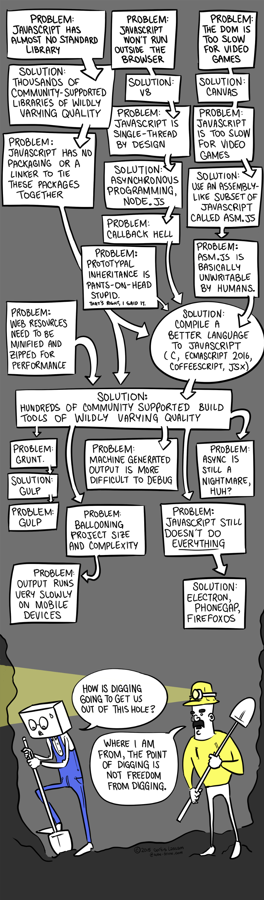
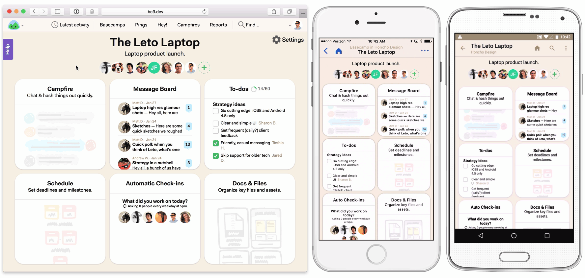

Rails 前端思想
Rei, @chloerei
谈谈前端
前后端分离是未来？
SEO
首页渲染速度
API 整合
Server-side Rendering!
Improving performance on twitter.com
Ember.js: Inside FastBoot: The Road to Server-Side Rendering
ReactDOMServer.renderToString
JavaScript Server 是前端吗？
前端相对论
相对整个系统而言，靠近用户的一端是前端。

#JavaScriptEE

认识 Rails
全栈式的 Web 应用框架
不要自我重复（DRY）
多约定，少配置
前端主要组件
UJS
SJR
Assets Pipeline
Turbolinks
UJS
Unobtrusive JavaScript
jquery-ujs
#= jquery-ujs<a href="..." data-remote="true" data-method="delete">Delete this entry</a>data-remotedata-methoddata-confirmdata-disable-withdata-type…
Bootstrap
<!-- Button trigger modal -->
<button type="button" class="btn btn-primary btn-lg" data-toggle="modal" data-target="#myModal">
Launch demo modal
</button>自定义 UJS 属性
$(document).on 'click', '[data-alert]', ->
alert($(this).data('alert'))<a data-alert="Message">Show message</a>SJR
Server-generated JavaScript Responses
0) 服务端渲染。
<h1>All messages:</h1>
<%# renders messages/_message.html.erb %>
<%= render @messages %>1) 通过 Ajax （UJS）提交表单。
<% form_for @project.messages.new, remote: true do |form| %>
...
<%= form.submit "Send message" %>
<% end %>2) 服务端保存数据。
class MessagesController < ActionController::Base
def create
@message = @project.messages.create!(message_params)
respond_to do |format|
format.html { redirect_to @message } # no js fallback
format.js # just renders messages/create.js.erb
end
end
end3) 服务端返回内嵌 HTML 的 JavaScript。
<%# renders messages/_message.html.erb %>
$('#messages').prepend('<%=j render @message %>');
$('#<%= dom_id @message %>').highlight();模版重用。
客户端计算需求少。
单向数据流。
Assets Pipeline
打包静态资源，在文件名后添加指纹。
压缩静态资源。
使用预处理程序。
大公司里怎样开发和部署前端代码？
#= require jquery
#= require jquery_ujsRails.application.config.assets.precompile += ['admin.js', 'admin.css', 'swfObject.js']Assets Pipeline 是接口
browserify-rails
autoprefixer-rails
sprockets-es6
Turbolinks
拦截
<a>点击事件，发起 AJAX 请求。服务端照常返回整页 HTML 内容。
Turbolinks 替换页面的
<title>和<body>内容。
无 Turbolinks：
有 Turbolinks：
Rebuilding the Shopify Admin: Improving Developer Productivity by Deleting 28,000 lines of JavaScript
single-page application (SPA)
问题：DOMContentLoaded 或 jQuery.ready() 只触发一次。
解答：绑定 Turbolinks 事件，例如 page:change。
问题：Turbolinks 有页面缓存，后退时重复绑定事件。
解答：让绑定操作幂等，或者绑定到 document。
问题：静态资源不更新。
解答：打包到一个静态文件。
RTFM

Turbolinks 5

Rails 前端方案
服务端渲染为主
Turbolinks 加速
UJS 抽取通用逻辑
SJR 实现局部更新
Assets Pipeline 管理静态文件
局部复杂逻辑使用前端组件 *
Rails 前端思想
轻前端
代码重用
降低复杂度
减少代码
全局思维
停止割裂前后端
不要被职位限制自己
成为更优秀的 Web 开发者

谢谢
by Rei, @chloerei